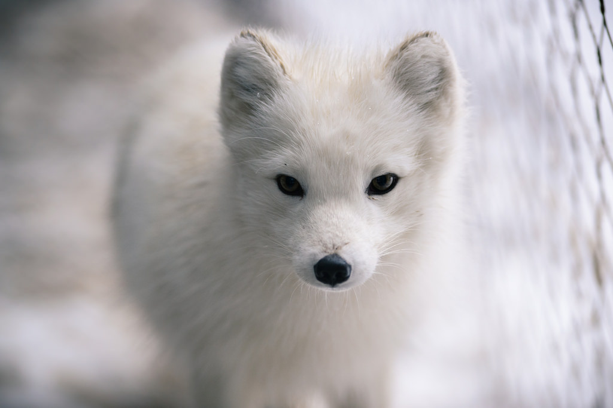

Mammals
From the frozen tundra polar ice to the tropical rain forest, the earth is rich in mammals, animals of antonishing diversity that have occupied a range of environments. Mammals probably began to dominate the earth about 65 million years ago. Without a doubt, modern humans are the most succesful mammals- we have explored and dominates the earth's habitats! Our domestics coexistence with other species began about around 10,000 years ago, when human culture shifted from nomadic hunter-gatherers to a society based on agriculture. Humans began to domesticate some mammals for work, meat and milk, and for useful products, such as wool leather. These domestic animals included dogs, sheep, pigs, cows, goats and horses.
There are 5,416 known mammal species. Their diversity is such that the smallest mammal, the shrew, may weigh only 3g(1/10 oz), while thhe largest, the blue whale, can reach up to 145 tonnes (160 tons). But this diversity is also evident in mammals' adaptation to different environments. Mammal species can run, glide, fly, jump. swim and crawl. To survive the rigours of low temperature, some cold -climate animals - such as pregnant female polar bears - spend the winter in deep sleep to save energy. Most aquatic mammals have thick layers of body fat instead of hair, which in most land mammals serves to conserve heat. Seals, dolphins, bats and chimpanzees all have upper limbs with similar bones, but seals have flippers, dolphins hav fins, bats have wings, and chimpanzees have arms.